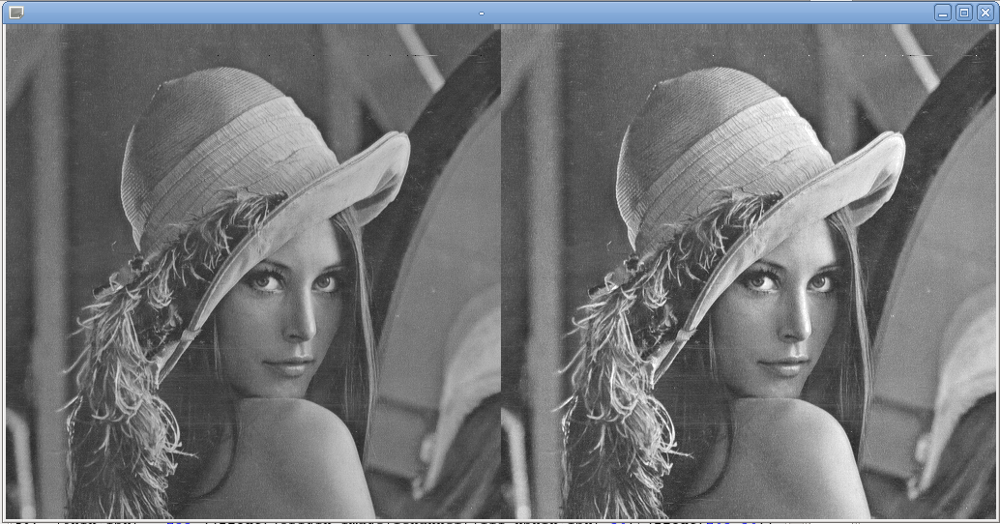

Diane Delallée - M1 Informatique
TD4 : utilisation d’une table de LUT – stretching automatique
1.Utilisation d’une table de LUT
a. Expression d’affectation à travers une LUT
Il faut creer un nouveau tableau LUT : int [256] ainsi pour chaque pixel de valeur i, on regardera dans le tableau LUT la valeur de la case i. Cela correspondra a la valeur que le pixel de processed-image devra avoir.
ex : origin_image[ichannel][ili*npxin] = 55 => on regarde LUT[55] => 23 (par ex) =>processed_image[ichannel][ili*npxin] =23
b. Fonction de transformation radiométrique globale
Comme il s'agit de regarder dans un tableau que l'on définit dans une méthode (ici dans le switch de notre programme), celui-ci doit être accessible depuis n'importe quel autre partie du programme. De ce fait, la fonction de LUT doit être ou avoir une portée globale.
c. Fonction de transformation d’histogramme
Principe général :
il faut parcourir le tableau representant l'histogramme, pour chaque valeur i, on regarde la valeur LUT[i], et dans le tableau de sortie HSortie[i] on met le nombre de pixels qu'il y avait dans H[i]
ex : H(r) = 23 (nb de pixels de valeur r) => LUT[r]=44 => HSortie[44] = 23
TransformationHistogramme(int[] H, int[] F) {
int[] res ;
int nbPixelH = 0 ;
int newReference = 0 ;
for(int i = 0 ; i ‹ 256 ; i++) {
nbPixelH = H[i] ;
newReference = F[i] ;
res[newReference] = nbPixelH ;
}
return res;
}
d. Menu des traitements radiométriques globaux
Suivant le cas, le tableau aura la forme suivante :
case 1 - identique : LUT [0,1,2,3,4,5,....,252,253,254,255]
case 2 - opposé : LUT [255,254,253,252,...5,4,3,2,1,0]
case 3 - seuillageA128 : LUT [0,0,0....,255,255,255] le changement s'effectue au niveau du pixel 128
case 4 - StretchingLineaire4point : LUT [0,0,0,0,.., Form(i), Form(i), Form(i),...,255,255,255] jusqu'au pixel 50 inclu valeur à 0, a partie du pixel 205 inclu valeur a 255 et sinon on applique Form(i) = (i-50/205-50)
On constate alors que l'image obtenue est légèrement plus claire (voir le front et le dessous du chapeau).
case 5 - StretchingLineaire2points : LUT [0,0,0,0,.., Form(i), Form(i), Form(i),...,255,255,255] jusqu'au pixel 50 exclu valeur à 0, a partie du pixel 205 exclu valeur a 255 et sinon on applique Form(i) = (i-50/205-50)

Afin d'optimiser le code en limitant l'utilisation des boucles "for", on va utiliser un seul et même tableau LUT, dont les valeurs changeront en fonction de l'option appelée par l'utilisateur. Une fois le tableau actualisé, on parcourra chaque pixel de l'image d'origine pour modifier sa valeur.
La différence en tre la transformation 4 et la transformation 5 réside dans la précision des informations. Avec la commande 4, on sait que l'on doit mettre à 0 tous les pixels de 0 a 50 inclus, et à 255 tous les pixels de 205 inclus a 255. Mais avec la commande 5, on ne sait pas si les pixels 50 et 205 doivent être inclus ou non. Dans le cas présent, pour la commande 5, nous exclurons les deux pixels en question (ils feront partit de l'intervalle qui subira la formule (i-205/205-50)).
2.Stretching automatique
a. Recherche à partir d’un histogramme
Pseudo-code qui calcule le nombre total de pixels image (N) à partie des valeurs de l'histogramme H(r) :
Pour calculer le nombre total de pixels image à partir d'un histogramme, on prend la somme de tous les pixels sauf ceux dont la valeur est 0, car ceux sont les pixels de background.
nombreDePixels (int[] H) {
int nbPixels = 0
Pour r de 1 à 255
nbPixels = nbPixels + H[r]
retourne nbPixels
}
Pseudo-code qui calcule la valeur de la borne a en fonction des valeurs de l'histogramme H(r), α et de N :
Pour calculer la valeur de la borne a, on a besoin des données suivantes :
- α = pourcentage de saturation
- Ns = nombre de pixels image saturé
- NbPixels = nombre total de pixels image
borneAValue (float α , int[] H) {
float alpha = α
int NbPixels = nombreDePixels(H)
int Ns = NbPixels * alpha
Ns = E(Ns / 2)
// ici E(Ns/2) correspond à la partie entière de l'opération Ns/2
// on ne prend que la moitié de la valeur de saturation
int a = Ns
retourne a
}
Pseudo-code qui calcule la valeur de la borne b en fonction des valeurs de l'histogramme H(r), α et de N :
Pour calculer la valeur de la borne b, on a besoin des données suivantes :
- α = pourcentage de saturation
- Ns = nombre de pixels image saturé
- NbPixels = nombre total de pixels image
borneBValue (float α , int[] H) {
float alpha = α
int NbPixels = nombreDePixels(H)
int Ns = NbPixels * alpha
Ns = E(Ns / 2)
// ici E(Ns/2) correspond à la partie entière de l'opération Ns/2
// on ne prend que la moitié de la valeur de saturation
int b =255-Ns
retourne b
}
b. Application aux images
Exemple de résultats obtenus :
 Récapitulatif de l'ensemble des résultats :
Roissy et San-remo pour α = 0,5% :
Roissy et San-remo pour α = 1,5% :
----------------------------------------------------------------------------------------------------------------------------------------------------------------------------------------------------------------------------------------------------
Récapitulatif de l'ensemble des résultats :
Roissy et San-remo pour α = 0,5% :
Roissy et San-remo pour α = 1,5% :
----------------------------------------------------------------------------------------------------------------------------------------------------------------------------------------------------------------------------------------------------